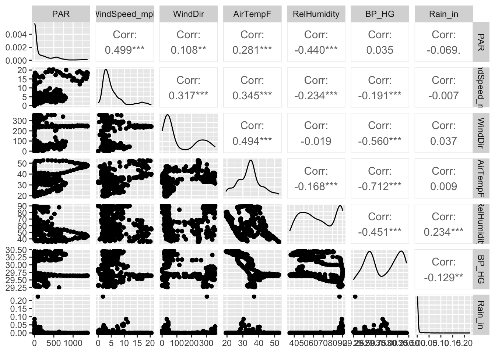
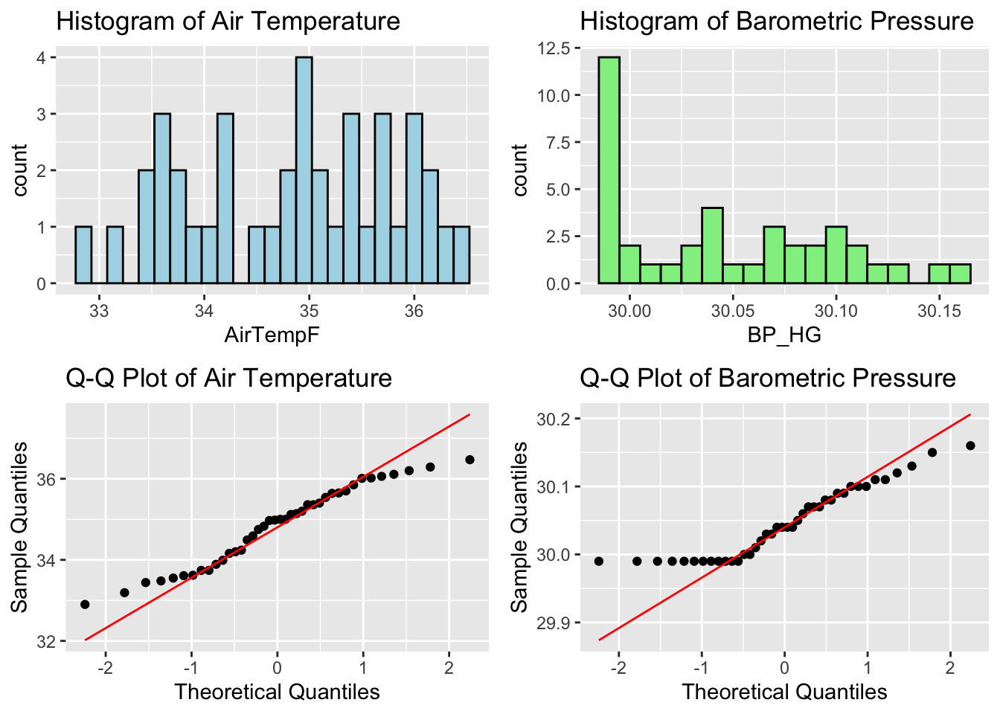

This analysis examines environmental data collected from the Rice Center, focusing on atmospheric variables such as air temperature, barometric pressure, and related measurements. Initial steps involved data cleaning, including conversion of units and removal of missing values, followed by exploratory analyses using correlation metrics and visualization tools like ggpairs() plots. The strongest correlation, observed between air temperature and barometric pressure (r = − 0.71), was analyzed using confidence intervals and hypothesis testing. Normality of the first 40 observations of air temperature and barometric pressure was evaluated using Q-Q plots and the Shapiro-Wilk test, revealing that air temperature approximates normality (p = 0.14), while barometric pressure does not (p = 0.001). A permutation test was conducted to assess the null hypothesis of no correlation, generating a distribution of correlation values. Finally, the Q-Q plot for barometric pressure displayed discrete, leveled patterns, reflecting the gradual and instrument-limited nature of environmental data. Together, these analyses provide insights into the relationships and statistical properties of atmospheric conditions at the Rice Center.
Look up the library GGally; it has a function named ggpairs(). Use that function to plot the atmospheric data from the Rice Rivers Center for the samples collected from 10 February to 15 February.
# Ensure that DateTime is in POSIXct format (if it was not correctly converted earlier)rice_cleaned$DateTime <-as.POSIXct(rice_cleaned$DateTime, format ="%m/%d/%Y %I:%M:%S %p")# Filter the dataset for the samples collected between 10 February and 15 Februaryrice_filtered <- rice_cleaned %>%filter(DateTime >=as.POSIXct("2014-02-10 00:00:00") & DateTime <=as.POSIXct("2014-02-15 23:59:59"))# Select only atmospheric data columns for plottingrice_atmospheric <- rice_filtered %>%select(PAR, WindSpeed_mph, WindDir, AirTempF, RelHumidity, BP_HG, Rain_in)# Use ggpairs to create the pairwise plotggpairs(rice_atmospheric)

For those atmospheric data, which pair of variables has the strongest correlation? What is the 95% confidence interval on that correlation coefficient?
# Calculate the correlation matrix for the atmospheric datacor_matrix <-cor(rice_atmospheric, use ="complete.obs")print(cor_matrix)
# Calculate the correlation and 95% confidence interval for AirTempF and BP_HGcor_test <-cor.test(rice_atmospheric$AirTempF, rice_atmospheric$BP_HG)print(cor_test)
Pearson's product-moment correlation
data: rice_atmospheric$AirTempF and rice_atmospheric$BP_HG
t = -24.263, df = 574, p-value < 2.2e-16
alternative hypothesis: true correlation is not equal to 0
95 percent confidence interval:
-0.7496722 -0.6687337
sample estimates:
cor
-0.7115555
The pair of atmospheric variables with the strongest correlation is Air Temperature (AirTempF) and Barometric Pressure (BP_HG), which have a correlation coefficient of -0.7116. This indicates a moderate to strong negative relationship, meaning that as air temperature increases, barometric pressure tends to decrease, and vice versa. The 95% confidence interval for this correlation is [-0.7497, -0.6687], suggesting that, with 95% confidence, the true correlation between these two variables in the population lies within this range. The correlation is statistically significant, as indicated by the very low p-value (< 2.2e-16), confirming that this relationship is unlikely to be due to random chance.
Using the first 40 observations in air temperature and barometric pressure from the Rice Center data set, determine if they are individually distributed as normal random variables.
# Subset the first 40 observationsrice_subset <- rice_atmospheric[1:40, c("AirTempF", "BP_HG")]# Check the first few rows to ensure the data is correcthead(rice_subset)
# Histograms for both variablesh1 <-ggplot(rice_subset, aes(x = AirTempF)) +geom_histogram(binwidth =0.15, fill ="lightblue", color ="black") +ggtitle("Histogram of Air Temperature")h2 <-ggplot(rice_subset, aes(x = BP_HG)) +geom_histogram(binwidth =0.01, fill ="lightgreen", color ="black") +ggtitle("Histogram of Barometric Pressure")# Q-Q plot for AirTempFqq1 <-ggplot(rice_subset, aes(sample = AirTempF)) +stat_qq() +stat_qq_line(color ="red") +ggtitle("Q-Q Plot of Air Temperature") +labs(x ="Theoretical Quantiles", y ="Sample Quantiles")# Q-Q plot for BP_HGqq2 <-ggplot(rice_subset, aes(sample = BP_HG)) +stat_qq() +stat_qq_line(color ="red") +ggtitle("Q-Q Plot of Barometric Pressure") +labs(x ="Theoretical Quantiles", y ="Sample Quantiles")gridExtra::grid.arrange(h1, h2, qq1, qq2, ncol =2)

# Perform the Shapiro-Wilk normality test for both variablesshapiro_airtemp <-shapiro.test(rice_subset$AirTempF)shapiro_bp_hg <-shapiro.test(rice_subset$BP_HG)# Print the test resultsprint(shapiro_airtemp)
Shapiro-Wilk normality test
data: rice_subset$AirTempF
W = 0.95783, p-value = 0.1411
print(shapiro_bp_hg)
Shapiro-Wilk normality test
data: rice_subset$BP_HG
W = 0.89606, p-value = 0.001471
Based on the Shapiro-Wilk normality tests conducted on the first 40 observations of Air Temperature (AirTempF) and Barometric Pressure (BP_HG) from the Rice Center dataset, the results are as follows:
For AirTempF, the Shapiro-Wilk test returned a test statistic of W = 0.95783 with a p-value of 0.1411. Since the p-value is greater than 0.05, we fail to reject the null hypothesis. This suggests that the AirTempF data is likely normally distributed, as there is no significant evidence to indicate a departure from normality.
On the other hand, for BP_HG, the Shapiro-Wilk test yielded a test statistic of W = 0.89606 with a p-value of 0.001471. Since the p-value is less than 0.05, we reject the null hypothesis. This indicates that the BP_HG data does not follow a normal distribution, as the evidence suggests a significant deviation from normality.
In conclusion, based on the Shapiro-Wilk test, AirTempF appears to be normally distributed, while BP_HG does not follow a normal distribution in the first 40 observations from the Rice Center dataset.
Given your findings in the last question, what kind of correlation statistic would be most appropriate for estimating the correlation between this subset of data?
Given the results of the Shapiro-Wilk normality tests, where AirTempF was found to be normally distributed (p-value = 0.1411) but BP_HG was not (p-value = 0.001471), the most appropriate correlation statistic for this subset of data is Spearman’s rank correlation coefficient. Unlike Pearson’s correlation, which assumes both variables are normally distributed and their relationship is linear, Spearman’s rank correlation is a non-parametric measure that does not rely on these assumptions. Instead, it evaluates the strength and direction of the monotonic relationship between two variables based on their ranks. This makes Spearman’s correlation more robust when one or both variables deviate from normality, as is the case with BP_HG. By focusing on ranks rather than raw data values, Spearman’s method ensures that the correlation estimate remains valid, even when normality or linearity assumptions are violated. Hence, it is the best choice for estimating the correlation between AirTempF and BP_HG in this dataset.
Look at a qqnorm() plot of the barometric pressure data you used in the previous example. Is there something that “looks” odd with these data? Explain why those data are the way they are.
The qqnorm() plot of the barometric pressure (BP_HG) data exhibits some unusual characteristics. The plot shows horizontal segments, where the points form steps or flat sections, indicating repeated values rather than continuous variability in the dataset. Additionally, there is noticeable deviation from the line, particularly in the tails, where the points diverge significantly from the reference line, suggesting non-normality.
This appearance can be explained by the nature of barometric pressure as an environmental variable. Barometric pressure tends to change gradually under stable weather conditions, leading to clusters of similar measurements and limited variability. Furthermore, instruments used to measure barometric pressure often record data with limited precision, creating discrete steps due to rounding or truncation. These factors contribute to the horizontal segments and deviations observed in the Q-Q plot, highlighting that barometric pressure is not normally distributed.
Using a permutation approach, define the distribution of correlation values between the variables in #3, assuming that the NULL hypothesis is true. Plot these as a histogram and include the observed correlation.
# Define variablesx <- rice_subset$AirTempFy <- rice_subset$BP_HG# Observed correlationobserved_correlation <-cor(x, y, method ="spearman")# Permutation testn_permutations <-1000permuted_correlations <-numeric(n_permutations)for (i in1:n_permutations) { shuffled_y <-sample(y) # Randomly shuffle BP_HG permuted_correlations[i] <-cor(x, shuffled_y, method ="spearman")}# Plot histogramhist(permuted_correlations, breaks =30, main ="Permutation Distribution of Correlations",xlab ="Correlation", col ="lightblue", border ="black")abline(v = observed_correlation, col ="red", lwd =2, lty =2)# Add legendlegend("topright", legend =c("Observed Correlation"), col ="red", lty =2, lwd =2)